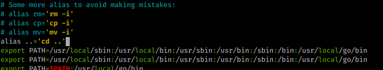
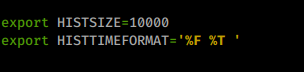
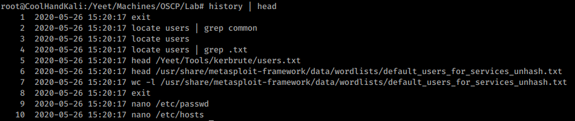

3.9.3.1 Exercises
☐ Create an alias named “..” to change to the parent directory and make it persistent across terminal sessions.

☐ Permanently configure the history command to store 10000 entries and include the full date in its output.

